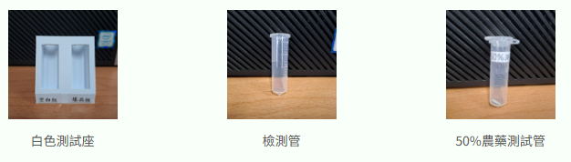
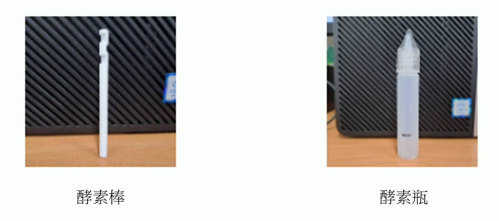

本系統特色：
- 🧪 可同時偵測空白組與樣品組的色彩資訊
- 📸 支援手機或電腦攝像頭進行即時拍攝與分析
- 📊 每 2 秒自動記錄一次 RGB 資料
- 🥬 建議於充足的環境下進行操作
- 🔍 適合學術實驗與田間快速檢測使用
實驗步驟
-
樣品處理
- 將樣品瓶中加入約1 c.c.的75%酒精
- 用吸管中空部分在蔬果上押出約5片圓片,作為蔬果樣品
- 將圓片的蔬果樣品放入樣品瓶中
- 將含有蔬果的樣品瓶搖晃數秒後靜置 3 分鐘，作為蔬果液
-
光源調整
- 取出兩根檢測管放入白色檢測座中
- 樣品組的檢測管加入3-4滴做好的蔬果液(50% 農藥測試管改滴75%酒精)
- 將手機架好並使其紅框對準白色檢測座中的兩根檢測管
- 樣品組紅框對準滴入蔬果液的檢測管；空白組對準未滴入任何樣品的檢測管
- 按下光源訊號確認查看空白組與樣品組的第三個數值(B)，確認其值大於150且相差不大於15
-
農藥測試
- 在酵素瓶中加水至畫線處(約3 c.c.)
- 取出一根酵素棒，有凹槽的朝下，放進酵素瓶裡搖晃混合成酵素液
- 將兩個檢測管中分別加入一半酵素液(加入時不要再移動檢測座和手機)
- 按下開始分析並等待結果
如有需技術支援或更多免費酵素棒，歡迎加入我們的Line